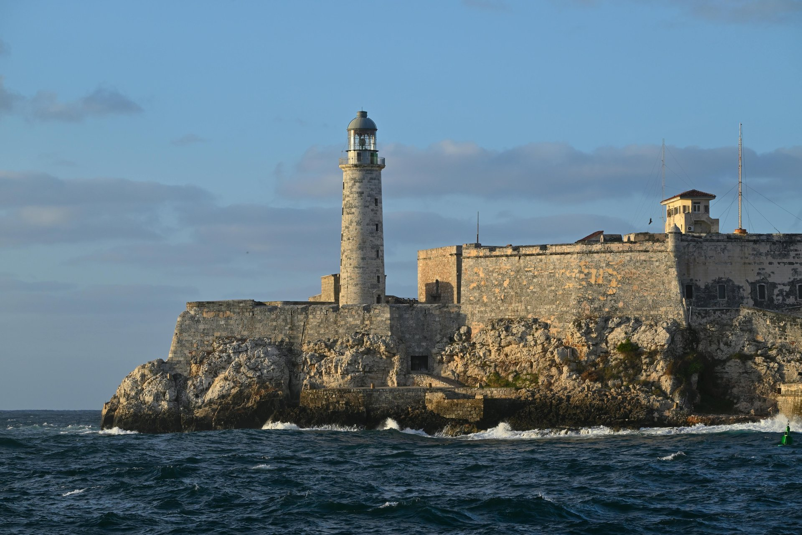

Cueva Ventana: The Cave with a View Over Puerto Rico

Most caves are defined by darkness — you go in, leave the light behind, and experience the underground on its own terms. Cueva Ventana near Arecibo is a different proposition. You enter the limestone cliff through a low passage and emerge at a wide natural opening — a "window" (ventana) in the rock — that looks out over the broad agricultural valley of the Río Grande de Arecibo far below. The combination of cave and panoramic view is so visually striking that the site has become one of the most photographed natural features in Puerto Rico's interior.
The Geology
Cueva Ventana sits within the same karst limestone terrain that underlies much of Puerto Rico's north coast interior — the same geology that created the Río Camuy cave system a few miles to the west. A stream once cut horizontally through the hillside, forming the cave passage. As the water table dropped over time, the stream abandoned the passage, leaving a dry horizontal tunnel through the cliff. The opening at the far end of the passage — the "window" — is where the original stream exited the cliff. Today it frames a view across a valley carved by the Río Grande de Arecibo, with mogote hills rising in the background.
Book it: tours for this trip
Zipline and Cave Tubing (Westside Adventures)
Company: Westside Adventures · Location: Arecibo · From: $80
Check Availability →Cave Mountain and Beach Tour (Marrero PR Tours Corp)
Company: Marrero PR Tours Corp · Location: Carolina · From: $99
Check Availability →THE CAVE ADVENTURE (GeoAventuras PR)
Company: GeoAventuras PR · Location: San Juan · From: $85
Check Availability →The Experience
The tour begins at a parking area on PR-10 south of Arecibo, where guides lead visitors up a trail through subtropical forest on the cliff face. The approach takes roughly 15–20 minutes on a moderately steep path. The cave entrance is low and requires ducking; the passage inside is cool, dimly lit by natural light filtering through the opening ahead, and lined with stalactites and cave formations accumulated over thousands of years. The passage is not particularly long — perhaps 100 meters through to the opening — but what waits at the far end is the reward.
At the window, the cliff drops away steeply below. The valley floor is visible far down, green with sugar cane and pasture in the wet season. The river is visible in the distance. Mogote hills — the rounded limestone karst towers characteristic of this region — rise across the valley. Morning light streams through the opening from the east, creating the photographs that circulate widely online. Afternoon light tends to backlight the view, giving a different but equally dramatic effect.
Practical Information
The cave is accessed via guided tour only — private tour operators run the experience from the base of the hill. Schedules and pricing vary by operator; confirm current availability before visiting. The hike is moderate and requires some agility on uneven terrain. Wear closed-toe shoes with grip. The cave itself is at a comfortable temperature year-round.
Cueva Ventana is conveniently located between the Río Camuy caves (approximately 20 minutes west) and the Arecibo area. Combining both in a single day is the standard approach for visitors doing Puerto Rico's karst interior.
Frequently Asked Questions
How do you get to Cueva Ventana? Via a guided tour from a parking area on PR-10 near Arecibo — a 30 to 40-minute round-trip hike. Guided access only.
Is it open year-round? It has been operated by private tour companies. Check current operator availability before visiting.
Related Reading
Explore Puerto Rico's natural wonders
See Nature Tours →